Suggested Use of Candidate Pages & Project Disclaimer
Note: There are a few ways to use this page. It mixes objective source material with light analysis and first-hand reporting so voters can choose their depth.
How to get the most out of this candidate page
- Start with the Quick Summary. Click the Quick Summary button underneath the websites section. It gives you the fast take: what we know from sources + brief analysis from a “data collector / local reporter” point of view.
- Scan the objective sources. If you want more data, jump into the source material we’ve collected:
- Official campaign website (if available)
- Social media pages and posts (if available)
- Interviews (video/audio) and transcripts (if available)
- Check the agenda & positions. Look for the candidate’s stated agenda and issue stances. We try to group them plainly so you can compare across candidates quickly.
- Read the Transparency/Accessibility rating. For a deeper look at how transparent the candidate has been (web presence, interviews, follow-ups, meet n greets) and how communicative they've been in response to outreach, see the rating and its short explanation. This helps you understand what’s easy to find and who is easy to contact.
- Use the page as a multi-layered hub. If you 'just want the facts', stick to the source documents. If you want opinions about transparency, accessibility, and communication, check the transparency meter. If you want coverage somewhere in between, like interviews that range from introductory to moderately pressing, watch the interviews. Choose your own adventure.
Where we add context or opinion, it’s to help busy voters make sense of gaps in local information. Not everyone has time to be a volunteer politico.
Robert McQuade

Videos
2024 InformTheVoteNJ Interview With Robert McQuade
📋 Click here for full interview summary 📋
In this 1 hour 24-minute interview, Robert McQuade, candidate for Millville City Commissioner, joins InformTheVoteNJ.com's Steven Solof for an in-depth conversation about his experiences, motivations for running, and perspectives on local issues. McQuade shares his history in Millville's local government, his time as a police officer, and his work on the School Board. He also discusses key issues facing the city, such as public safety, economic development, homelessness, and the importance of community involvement.
Personal Background and Commitment to Millville:
McQuade emphasizes his lifelong connection to Millville, his family’s roots in the city, and his deep desire to make a positive impact. He shares the challenges he’s faced over the years, including personal losses and setbacks, and how these experiences have fueled his drive to help the community.
Police Experience and Community Policing:
McQuade draws on his experience as a part-time police officer to advocate for increased police presence, especially through community policing efforts that focus on building relationships with residents and addressing quality-of-life issues in parks and public spaces.
Addressing Homelessness:
McQuade discusses the issue of homelessness in Millville, suggesting that while the city faces challenges, it requires a joint effort from both local and county officials to provide solutions. He advocates for coordinated resources and community engagement to help homeless individuals get back on their feet.
Economic Development and Infrastructure:
McQuade talks about the balance between economic growth and preserving the character of Millville. He highlights the Nabb Avenue Extension project, road safety concerns, and the need for a competitive job market with fair salaries for city employees.
Final Thoughts:
McQuade underscores his dedication to Millville and his belief in local government’s role in improving lives. He stresses the importance of being hands-on, accessible, and proactive in solving problems, and invites voters to engage with his campaign as he seeks to continue serving the city he loves.
⏳ Click to view timestamps, topics, and takeaways ⏳
Interview Summary – Robert McQuade
This table highlights the key topics covered in the interview, summarizing major takeaways per section.
| Timestamp | Topic | Key Takeaways |
|---|---|---|
| 0:00 | Intro & Background | McQuade introduces himself, detailing his background in the Millville School Board, City Commission, and law enforcement. |
| 3:19 | City Commissioner Experience | McQuade reflects on his time as a commissioner, including working on streets and roads, and tackling issues like squatters and drug activity. |
| 6:01 | Police Experience | McQuade shares details about a bar fight incident and his history as a part-time police officer. |
| 14:13 | Community Policing | McQuade stresses the importance of building trust through community policing and increasing police presence in public areas. |
| 18:11 | Homelessness | McQuade discusses how homelessness is a broader issue that requires local and county coordination to address effectively. |
| 23:04 | Economic Development | McQuade talks about balancing economic growth with preserving Millville’s character, with a focus on tourism and infrastructure. |
| 31:00 | Nabb Avenue Extension | McQuade advocates for speeding up the Nabb Avenue Extension project to ease traffic and stimulate economic growth. |
| 34:23 | Salary Competitiveness | McQuade addresses the need for competitive salaries for public safety and city employees, advocating for better compensation to reduce turnover. |
| 37:30 | Water/Sewer Issues | McQuade discusses the need for voluntary connections to the water and sewer system in Laurel Lake, addressing concerns over cost and fairness. |
| 40:46 | State Mandates vs Local Needs | McQuade talks about the tension between state mandates and local needs, advocating for strong negotiation with state officials. |
| 45:04 | Section 8 Housing | McQuade reflects on Millville’s reliance on Section 8 housing and the social challenges that come with it. |
| 50:01 | Civic Engagement | McQuade emphasizes the importance of local government and community involvement in solving problems. |
| 55:24 | Police Presence & Safety | McQuade reiterates the value of increased police presence in maintaining public safety and order in Millville. |
| 1:02:59 | Sewer Infrastructure Funding | McQuade discusses funding options for sewer and water infrastructure in Millville, focusing on equitable solutions for residents. |
| 1:04:59 | Broadband Access | McQuade addresses Millville’s need for broadband expansion, considering the funding and priorities for the project. |
| 1:06:00 | Local & State Collaboration | McQuade talks about the importance of working with state officials and leveraging relationships to secure resources for Millville. |
2024 InformTheVoteNJ Interview With Robert McQuade (Part 2)
📋 Click here for full interview summary 📋
In this follow-up interview, Robert McQuade discusses his updated campaign agenda and compares himself to other candidates in the race for Millville City Commissioner. Key topics include the Citizen’s Community Relations Board, addressing homelessness, revitalizing High Street, and his stance on retail marijuana. McQuade also reflects on his volunteerism and boots-on-the-ground approach to local issues.
Community Engagement and the Citizen’s Community Relations Board:
McQuade explains his plan to establish a community board chaired by a citizen, allowing for more citizen input into local government decisions. The board will focus on community relations and strategic planning.
Addressing Panhandling and Homelessness:
McQuade discusses how he plans to address homelessness and panhandling in Millville, with a focus on working alongside organizations like M25 to get individuals off the streets and into support programs.
Retail Marijuana Sales in Millville:
McQuade shares his opposition to retail marijuana sales in Millville, citing concerns over the impact on crime and disorder in the city.
Revitalizing High Street:
McQuade discusses his vision for revitalizing High Street, including parking solutions and attracting new businesses to the area to boost downtown Millville.
Historic Racism and Systemic Issues:
McQuade reflects on the history of racism in Millville and the ongoing struggles with crime and economic conditions in the community, emphasizing the need for focus on community improvement rather than racial divides.
⏳ Click to view timestamps, topics, and takeaways ⏳
Interview Summary – Robert McQuade (Part 2)
This table highlights the key topics covered in the interview, summarizing major takeaways per section.
| Timestamp | Topic | Key Takeaways |
|---|---|---|
| 0:00 | Intro & Recap | McQuade joins for a follow-up interview to discuss his updated campaign and platform, addressing changes in the race and new developments in the city. |
| 1:00 | Citizen’s Community Relations Board | McQuade introduces his plan to create a community board to involve citizens more directly in local governance, focusing on strategic planning and neighborhood needs. |
| 3:30 | Millville Ambassadors Program | McQuade talks about the Millville Ambassadors initiative, aimed at involving citizens in local issues, despite some opposition from city officials. |
| 7:45 | Addressing Panhandling & Homelessness | McQuade discusses his plan for addressing homelessness and panhandling, including his efforts to work with organizations like M25 to provide housing and support services. |
| 14:20 | Retail Marijuana Sales | McQuade explains his stance against retail marijuana sales in Millville due to concerns about crime and disorder, referencing his past opposition to such initiatives. |
| 21:35 | Walsh Act Government Structure | McQuade compares the Walsh Act structure to a traditional mayoral system, highlighting the limitations of Millville’s current governance and advocating for change. |
| 26:50 | Historical Racism & Community Impact | McQuade reflects on Millville’s history of racism, acknowledging past issues but focusing on current challenges such as crime and economic inequality. |
| 31:45 | Revitalizing High Street | McQuade outlines his vision for revitalizing High Street, including parking solutions and attracting businesses to boost the local economy. |
| 36:10 | Collaboration with Local Schools | McQuade discusses his past collaboration with local schools and his intention to continue working closely with educational institutions to improve Millville. |
| 41:50 | Final Thoughts & Volunteerism | McQuade closes with reflections on his volunteer work, emphasizing his commitment to helping Millville residents and improving the city through direct involvement. |
2025 InformTheVoteNJ Interview With Robert McQuade
📋 Click here for full interview summary 📋
In this third interview, Robert McQuade dives into Millville’s ongoing challenges and his vision for the city's future. From street improvements and infrastructure updates to tackling police staffing shortages, McQuade provides a practical approach to solving Millville’s pressing issues. He also touches on his stance on cannabis sales and highlights the drawbacks of the Walsh Act form of government.
Agenda & City Improvements:
McQuade shares his goals for the city in 2025, including street and road cleanups, improved infrastructure, and fostering a better living environment in Millville.
Government Structure & Leadership:
McQuade discusses Millville’s current Walsh Act form of government, arguing for more decisive leadership and the potential advantages of a mayor-led system for better efficiency.
Economic Development:
McQuade emphasizes the importance of the NAB road extension and industrial growth as key economic drivers for Millville, underscoring the need for more ratables to fuel the local economy.
Police Staffing & Crime Solutions:
McQuade addresses the police staffing shortage in Millville and suggests utilizing grants, hiring class one and two officers, and enhancing community engagement to improve public safety.
Cannabis Sales & Community Impact:
McQuade shares his cautious view on cannabis sales in Millville, particularly focusing on the proximity to schools and the need for more community input before making a decision.
Community Engagement & Public Service:
McQuade stresses the importance of elected officials being visible and accessible, advocating for more in-person meetings and open communication channels between elected officials and Millville residents.
⏳ Click to view timestamps, topics, and takeaways ⏳
Interview Summary – Robert McQuade (Part 3)
This table highlights the key topics covered in the interview, summarizing major takeaways per section.
| Timestamp | Topic | Key Takeaways |
|---|---|---|
| 0:00 | Intro & Recap | McQuade returns for the third interview to discuss Millville’s future, focusing on key issues such as street improvements and police staffing. |
| 0:44 | Agenda & City Improvements | McQuade discusses his priorities for 2025, including cleaning up the city’s streets and improving the overall infrastructure of Millville. |
| 6:34 | Government Structure & Leadership | McQuade compares the Walsh Act to a traditional mayoral system and calls for more decisive leadership to streamline governance in Millville. |
| 10:01 | Economic Development | McQuade outlines his plans for the NAB road extension and industrial growth as key contributors to Millville’s economic development and increasing ratables. |
| 16:00 | Police Staffing & Crime Solutions | McQuade addresses the police staffing shortage, advocating for grants, hiring class one and two officers, and focusing on community engagement to tackle public safety concerns. |
| 23:08 | Cannabis Sales & Community Impact | McQuade shares his cautious stance on cannabis sales in Millville, particularly in terms of its proximity to schools and the need for more community involvement. |
| 27:01 | Community Engagement & Public Service | McQuade emphasizes the need for elected officials to be visible and accessible to residents, advocating for more in-person meetings and open communication channels. |

Agenda
-
Street & Road Improvements and City Cleanliness
Robert McQuade has made significant strides in improving Millville’s streets and public spaces. He focused on cleaning up the streets, painting curbs, and clearing gutters, working directly with the Streets and Roads department. His hands-on approach includes collaborating with local workers and addressing their needs through Total Quality Management (TQM), a system that puts employees in charge of improving their daily tasks. This practical approach aims to create a cleaner, more welcoming city for all residents.
McQuade is also actively involved in cleaning up areas like railroad tracks and vacant lots, ensuring the city is maintained properly. His collaboration with community members, such as candidate David Summers, highlights his willingness to tackle these tasks head-on, even utilizing personal equipment to clear waste. McQuade's ongoing engagement in these projects demonstrates his commitment to not just talking about improvements, but actually making them happen.
-
Community-Centered Governance
McQuade emphasizes the importance of hands-on leadership and staying connected with the people. His approach is to be the "People’s Commissioner" by attending to the concerns of residents directly, not just through formal meetings. He recalls his childhood experience of receiving care and support from Millville's firefighters and police officers, which has shaped his desire to serve the city. McQuade wants to bring back that personal connection, ensuring the public has a voice in city decisions and that officials are always approachable.
This commitment is reflected in his efforts to engage with the community beyond just official meetings. McQuade also emphasizes the importance of face-to-face interactions over digital communication, as he believes it fosters a deeper connection with residents. His personal philosophy of leading by example and working directly with the public has earned him respect as a hands-on and accessible leader.
-
Improving Millville’s Police Force and Public Safety
One of McQuade’s primary concerns is the police staffing shortage in Millville. He acknowledges that the city's police force has been understaffed for years, which has a direct impact on safety. He draws from his personal experience as a part-time officer to emphasize that even when there were around 85 officers, the department was still considered understaffed. McQuade believes that any number below that is inadequate to ensure public safety.
To address this, McQuade suggests a two-fold approach: first, securing federal grants to help fund additional officers, and second, increasing the number of class one and class two officers—officers who are less costly but still provide valuable patrolling and law enforcement. He also calls for a shift back to foot and bike patrols, which he believes can enhance police visibility and community interaction, making it easier to spot potential issues before they escalate.
-
Economic Development and Revenue Generation
McQuade understands that Millville’s economic future is tied to its ability to grow its tax base. One of his key priorities is expanding industrial development, particularly through projects like the NAB road extension. This extension would provide a more efficient truck route to Millville’s industrial park and airport, reducing congestion in residential areas and encouraging further investment. McQuade sees the expansion as a vital step toward bringing more business and jobs to the area, which in turn will increase local revenue.
Beyond physical infrastructure, McQuade emphasizes that the city must find sustainable ways to generate revenue without overburdening its residents. He opposes raising taxes as a solution, instead focusing on bringing in more businesses and leveraging existing resources. For McQuade, the key to a stable economy is not only industrial growth but also creating a balanced and fair tax system that benefits everyone.
-
Cannabis Sales and Zoning Issues
McQuade approaches the issue of cannabis sales with caution. While he supports medical cannabis for those in need, he expresses concern about the impact of recreational cannabis sales, particularly in relation to schools and neighborhoods. McQuade voted against a proposal to place a cannabis dispensary near a charter school on Weaten Avenue, citing the proximity to young children as a significant concern. He also raises the issue of cannabis sales in Millville, particularly in areas where the city has not yet decided on the appropriate zoning for dispensaries.
McQuade believes that the community’s opinion should be a major factor in determining where cannabis dispensaries are located. He advocates for listening to residents, local businesses, and other stakeholders before making decisions that could affect the entire city. McQuade’s cautious approach reflects his desire to balance economic growth with community safety and well-being.
-
Government Efficiency and Reform
McQuade is deeply critical of Millville’s current form of government under the Walsh Act, describing it as inefficient and outdated. He compares the commission system to a household where all members have equal power, making it difficult to get things done. Without a final decision-maker, important projects and decisions often stall. McQuade argues that switching to a mayor-led system would provide the leadership and clarity necessary for effective governance.
In his view, the Walsh Act system is a relic of the past and needs reform. He points to his experience on the city commission, where he worked with colleagues like Joe Suie to build consensus and address issues. However, he believes that to move Millville forward, the city needs a more decisive leadership structure, where a single individual can take responsibility for key decisions and drive the city’s progress.
Issues
-
Police Staffing and Crime Prevention
McQuade’s commitment to improving public safety is evident in his deep concern for Millville’s police staffing crisis. He identifies the shortage as a major obstacle to effectively addressing crime, particularly in high-risk areas. His plan includes bringing in additional officers through federal grants, increasing class one and class two officers, and enhancing community policing through foot and bike patrols. By directly engaging with the community, McQuade believes the police force can regain the trust of residents and work more effectively to reduce crime.
-
Economic Development and Industrial Growth
The NAB road extension remains a key focus of McQuade’s economic development agenda. This project is expected to unlock significant industrial potential by connecting Millville’s industrial park and airport more efficiently. McQuade is also focused on attracting more businesses to Millville by improving infrastructure and providing incentives for development, helping create a more vibrant local economy that provides more jobs and services to residents.
-
Public Engagement and Government Transparency
Transparency and public engagement are at the core of McQuade’s leadership style. He advocates for regular, in-person meetings with residents to ensure that their concerns are heard and addressed. McQuade has even suggested community meetings where residents can directly engage with city officials, fostering a more open, accessible government. His commitment to transparency ensures that the city’s leaders remain accountable and responsive to the needs of the people.
Background and Experience
-
Professional and Educational Background
Robert McQuade has dedicated much of his life to serving the Millville community. He has over 15 years of experience as a part-time police officer, during which he gained firsthand insight into local law enforcement challenges. In addition to his work in public service, McQuade has been actively involved in his community, particularly through the creation of the Center City Crime Watch, which he co-founded to address local crime and safety issues.
McQuade has also pursued education and training that supports his commitment to public service, constantly seeking ways to improve his ability to lead and contribute to the city. His direct involvement in the community has shaped his deep understanding of Millville's needs and priorities.
-
Experience in Government
Robert McQuade served as a Millville City Commissioner for 11 months, during which time he focused on improving city services and addressing pressing infrastructure issues. Although his tenure was brief, McQuade gained valuable experience working with city departments and engaging with residents on the ground.
Before his time as Commissioner, McQuade served for nine years on the Millville Board of Education. This experience allowed him to develop a strong understanding of local governance, public education, and the unique challenges facing Millville’s schools. McQuade’s commitment to improving public services is evident in his extensive work in both education and city government.
-
Community Leadership and Advocacy
McQuade co-founded the Center City Crime Watch, an organization dedicated to improving public safety and addressing crime concerns in the heart of Millville. Through this initiative, he worked closely with residents and local law enforcement to create safer neighborhoods and strengthen community engagement. His efforts reflect his belief in proactive solutions and community-based policing.
McQuade is known for his hands-on approach to leadership, frequently working directly with city departments and community groups. His experience as a part-time officer and his leadership in community safety initiatives have shaped his approach to governance, with a focus on collaboration, transparency, and service to the public.
-
Public Safety and Law Enforcement Experience
McQuade has served as a part-time police officer in Millville for over 15 years. This role has given him a unique perspective on the challenges faced by law enforcement, including staffing shortages and community relations. His experience in policing has informed many of his positions on public safety, crime prevention, and resource allocation for the police department.
His direct involvement in the field of law enforcement has led to a practical understanding of the importance of community policing, effective patrol strategies, and maintaining public safety through visible, accessible officers. McQuade's law enforcement background strengthens his candidacy, giving him the experience needed to address the city’s most urgent issues, such as staffing shortages and crime prevention.
Prior Election Coverage
Interview on QBC
Individual Agenda
- Community Policing - Increase police presence throughout the community and have them establish a friendly connection to the public. By establishing a friendly, communicative relationship with residents, police can become more aware of issues such as crime, homelessness, and road safety.
- Strong Coordination with County and State Representatives - Oftentimes issues going on in the city are also related to county and state jurisdictions. By maintaining strong relationships with representatives who handle different jurisdictions, problem-solving will be more efficient.
- Create a Citizens Community Board - In prior terms, McQuade had been involved with boards that invited members of the city to help identify issues, suggest methods for addressing those issues, and prioritize them. If elected, McQuade intends to establish such a board in Millville to help constituents feel heard and engaged.
- Hands-On Approach With the Community - McQuade intends to address problems directly as a citizen when appropriate and to ask community organizations like churches to help directly address problems.
Stances on Current Issues
The below interview comprehensively goes through current issues that incumbent Ranello and current Vice-Mayor Sooy brought up to us. That list of issues can be found here. McQuade addresses them in his own words starting at about 16:00, and we have a bullet point summary of that below the video.
Inform The Vote Interview
Inform The Vote Follow-Up Interview
- Disorderliness at Parks and Public Property - Increase community policing, which will help police become more directly aware of problems.
- Homeless encampments - Create zoned areas where people can stay so it's contained. Coordinate with county and state representatives to figure out where homeless people are coming from, as sometimes they are bussed in from cities like Atlantic City. Establish humane treatment programs to help get the homeless back on their feet.
- Economic development pros and cons - Keep commercial development to the designated areas such as the industrial parks. Coordinate with tourism areas like Cape May to help increase economic activity. Widen the junction at Route 49 and Route 47 to make traffic flows more appealing.
- Nabb Ave Extension and its alleged slow-moving pace - Coordinate with state and national reps like Senator Testa and Congressman Van Drew to see why it is moving slowly.
- City Salary Competitiveness - The city only has so much money to work with in its budget, so bringing the issues of crime stats and low salaries to Trenton could help make the state more aware of the city's struggles, and thereby get the state to send more money to the city.
- Road Safety and Off Road Vehicles - Police Chief Harvey had a system of using unmarked vehicles to observe and report similar problems in the past. Implementing a similar system could help address this current issue.
- Water and Sewage Infrastructure in Laurel Lake - Wants to keep the current expansion methods moving forward while making sure residents have an opt-out method so they are not forced to participate.
- State Mandates vs Local Needs - Wants to have some known people who can act as negotiators between the state and city. This will help ensure the city is compliant without acting against its own interests.
Experience
- Former Millville Board of Education member for 9 years
- Former Millville City Commissioner for 11 months
- Co-founded Center City Crime Watch
- Part-time police officer for 15 years
Media
When doing research for our site, we usually google each candidate's name to see what we can find, with varying results. When one googles candidate McQuade, an article regarding an arrest comes up, which makes it seem as though McQuade was arrested for being involved in a bar fight. However, as per our interview with McQuade, it seems as though a fight broke out when he arrived to pick up a friend from the bar, and McQuade, a special police officer with many certifications and recognitions in the community, went to perform a citizen's arrest on someone involved in the fight. He wanted us to share documentation of his credentials and recognitions to help clarify the articles online:
Vineland Police Special Officers Certification
If on desktop, right-click the image and select 'open in new tab' for a larger image
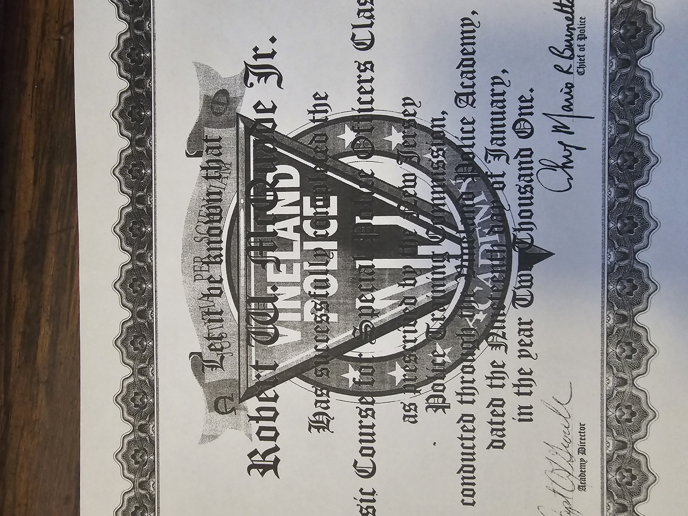Public Safety Training
If on desktop, right-click the image and select 'open in new tab' for a larger image
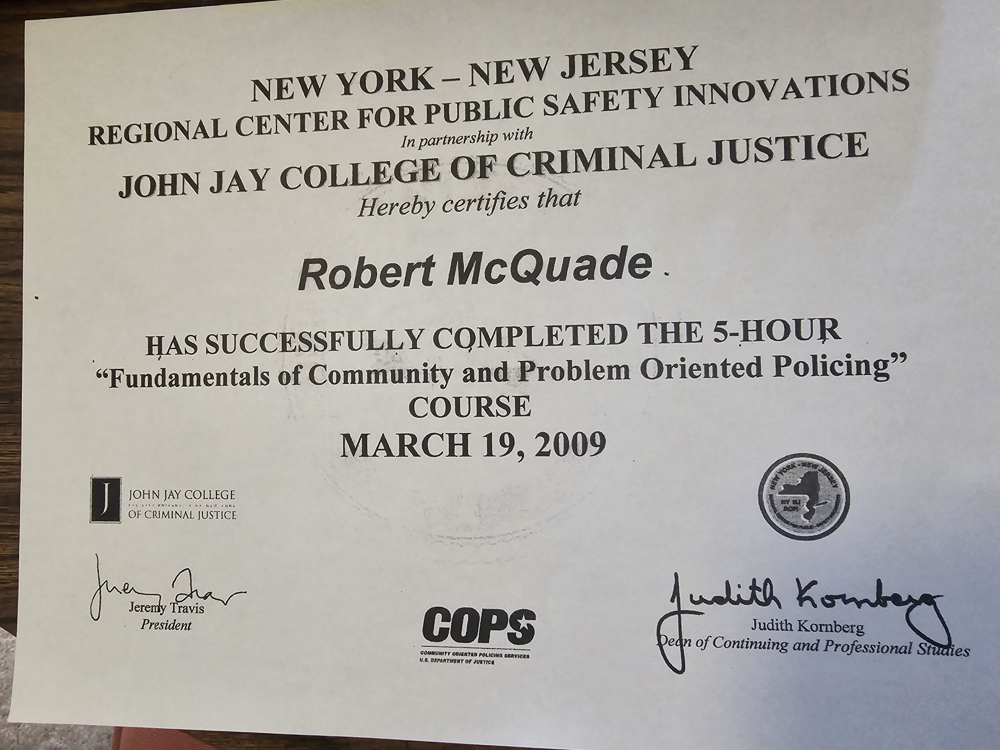NJ Police Certification
If on desktop, right-click the image and select 'open in new tab' for a larger image
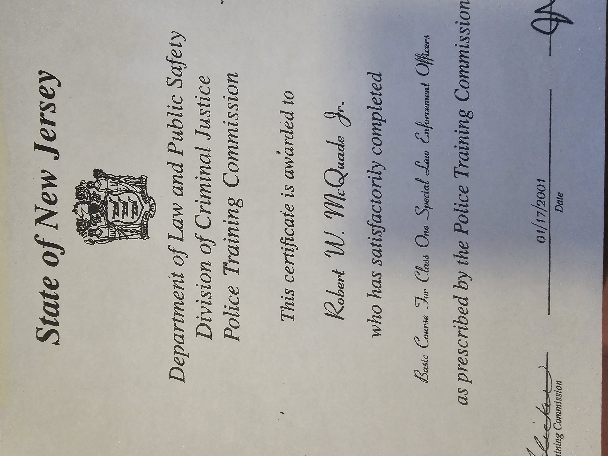FEMA Emergency Management Certification
If on desktop, right-click the image and select 'open in new tab' for a larger image
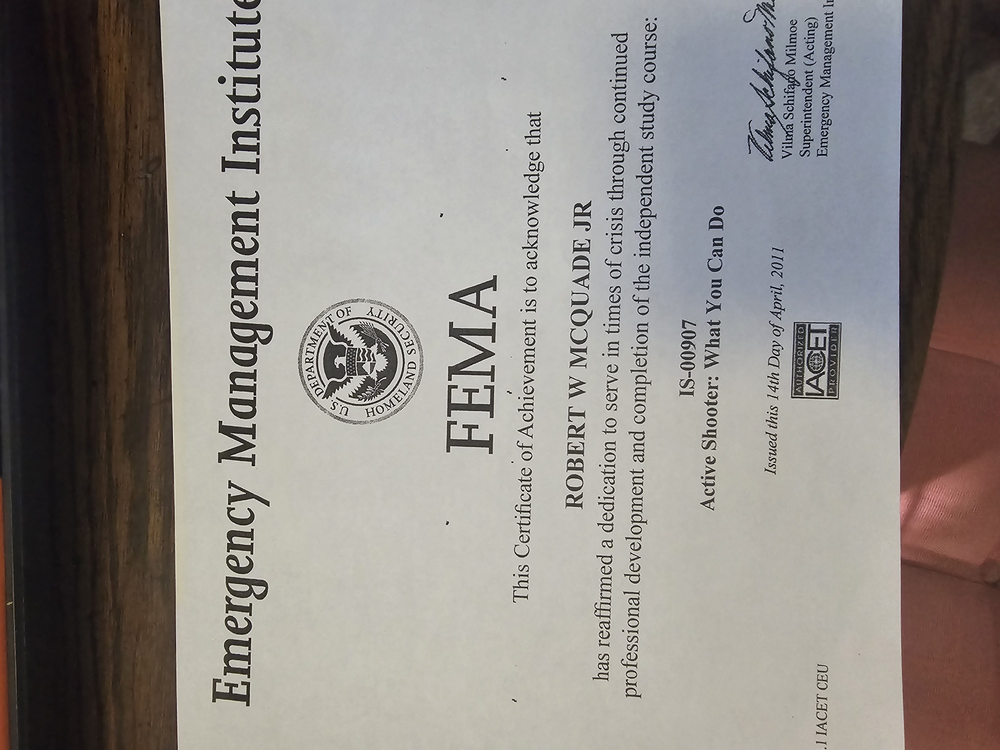Cumberland Mall Recognition
If on desktop, right-click the image and select 'open in new tab' for a larger image
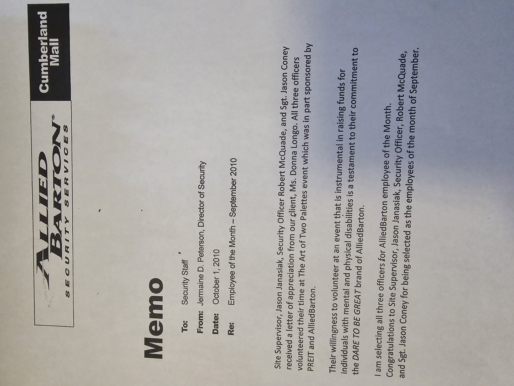Allied Barton Employee of the Month
If on desktop, right-click the image and select 'open in new tab' for a larger image
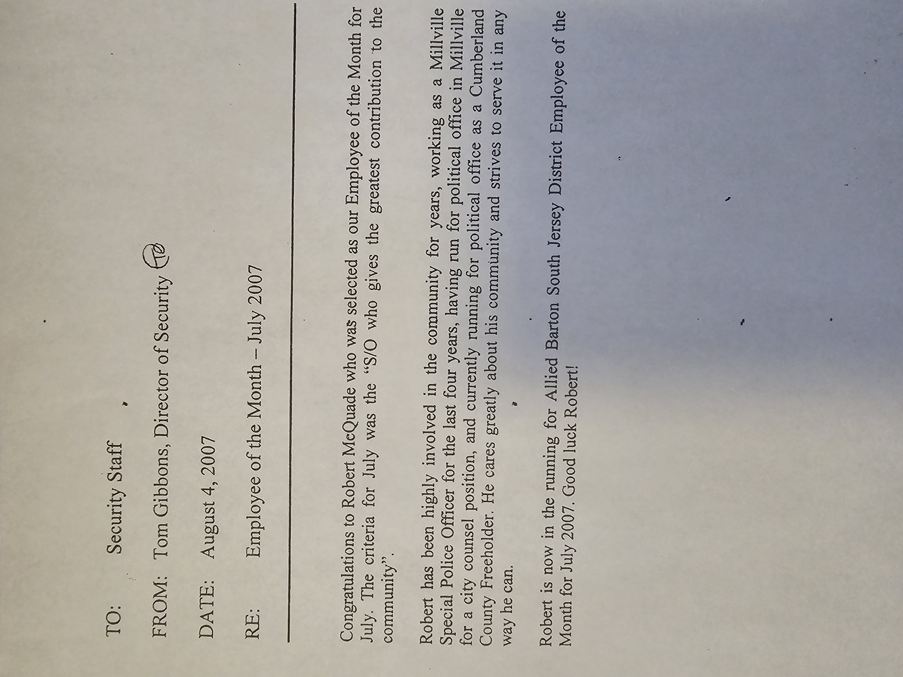Recognition from Mayor of Millville
If on desktop, right-click the image and select 'open in new tab' for a larger image
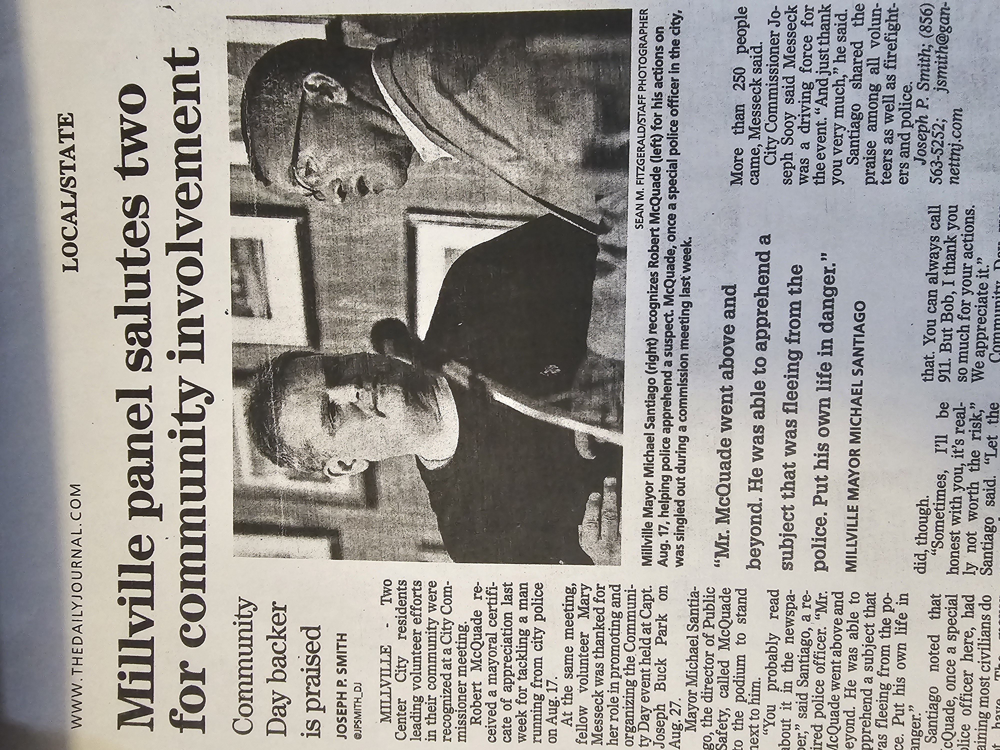Millville Officer Award
If on desktop, right-click the image and select 'open in new tab' for a larger image
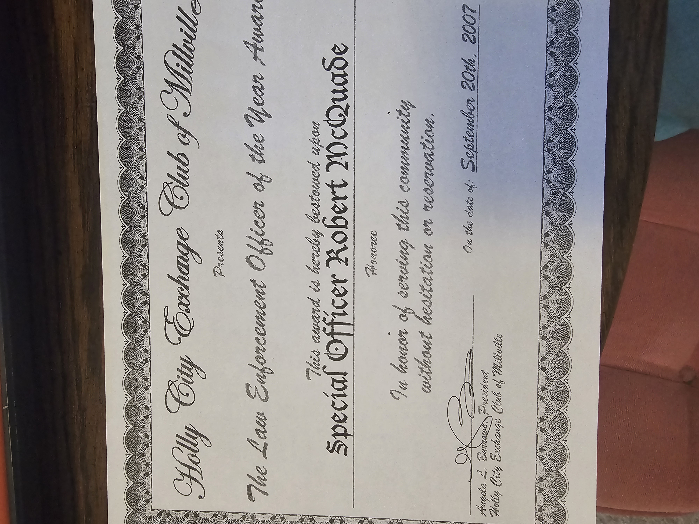Millville Police Department Recognition
If on desktop, right-click the image and select 'open in new tab' for a larger image
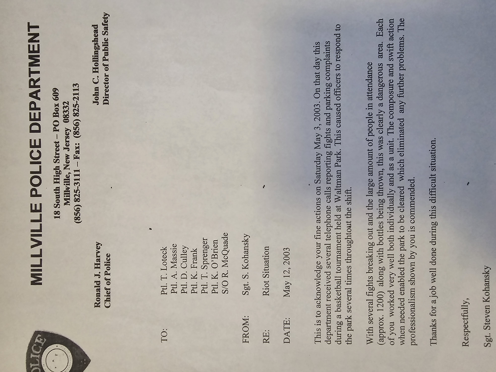Recognition from City of Millville
If on desktop, right-click the image and select 'open in new tab' for a larger image
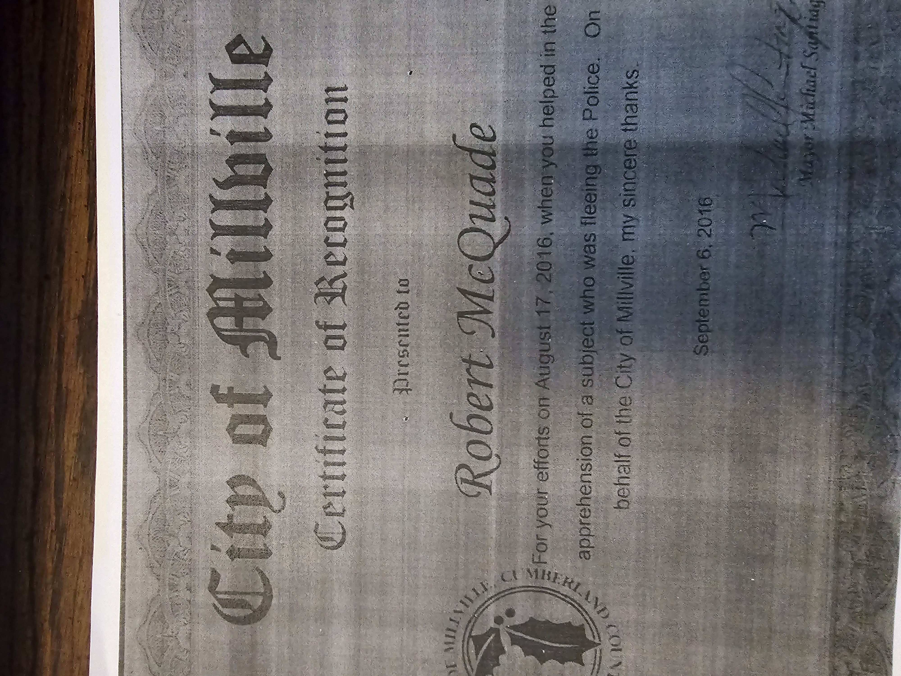Recognition from Sergeant
If on desktop, right-click the image and select 'open in new tab' for a larger image
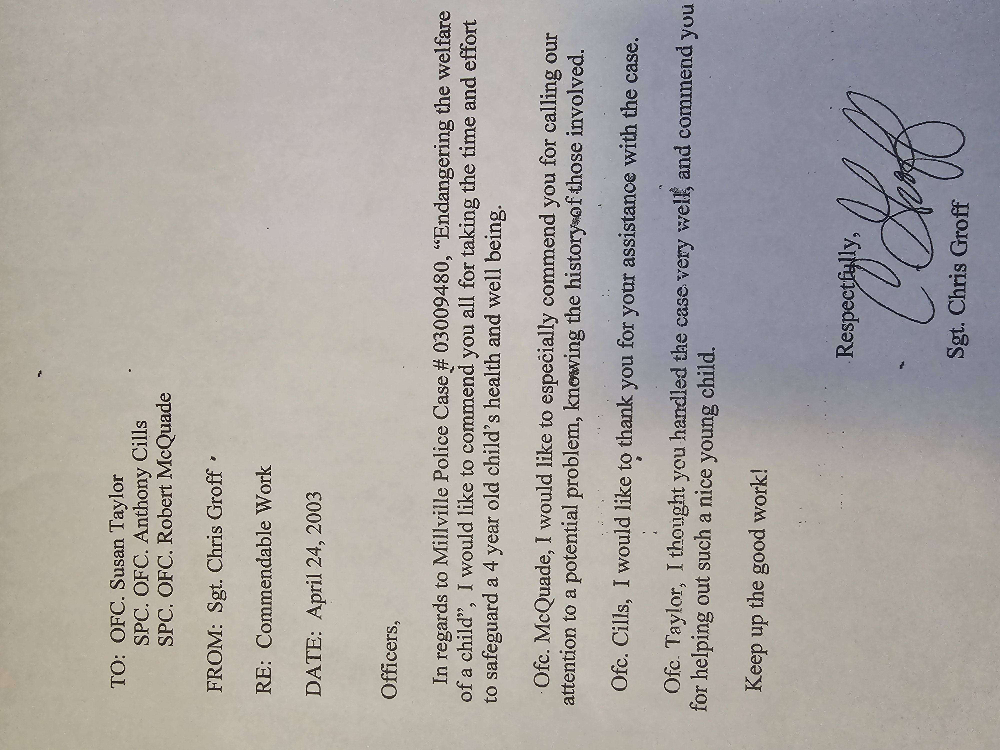Online articles: